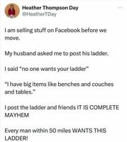

0


An anonymous reader shared this report from the blogIt's FOSS:
Greg Kroah-Hartman has updated the projected end-of-life (EOL) dates for several active longterm support kernels via a commit. The provided reasoning? It was done "based on lots of discussions with different companies and groups and the other stable kernel maintainer." The other maintainer is Sasha Levin, who co-maintains these Linux kernel releases alongside Greg. Now, the updated support schedule for the currently active LTS kernels looks like this:
— Linux 6.6 now EOLs Dec 2027 (was Dec 2026), giving it a 4-year support window.
— Linux 6.12 now EOLs Dec 2028 (was Dec 2026), also a 4-year window.
— Linux 6.18 now EOLs Dec 2028 (was Dec 2027), at least 3 years of support.
Worth noting above is that Linux 5.10 and 5.15 are both hitting EOL this year in December, so if your distro is still running either of these, now is a good time to start thinking about a move.
Read more of this story at Slashdot.
Anthropic's Claude AI assistant "jumped to the No. 2 slot on Apple's chart of top U.S. free apps late on Friday," reports CNBC:
The rise in popularity suggests that Anthropic is benefiting from its presence in news headlines, stemming from its refusal to have its models used for mass domestic surveillance or for fully autonomous weapons... OpenAI's ChatGPT sat at No. 1 on the App Store rankings on Saturday, while Google's Gemini was at No. 3... On Jan. 30, [Claude] was ranked No. 131 in the U.S., and it bounced between the top 20 and the top 50 for much of February, according to data from analytics company Sensor Tower... [And Friday night, for 85.3 million followers] pop singer Katy Perry posted a screenshot of Anthropic's Pro subscription for consumers, with a heart superimposed over it.
Friday Anthropic posted "We are deeply grateful to our users, and to the industry peers, policymakers, veterans, and members of the public who have voiced their support in recent days. Thank you. "
Read more of this story at Slashdot.
In a 9,000-word expose, a writer for Harper's visited San Francisco's young entrepreneurs in September to mockingly profile "tech's new generation and the end of thinking."
There's Cluely founder Roy Lee. ("His grand contribution to the world was a piece of software that told people what to do.") And the Rationalist movement's Scott Alexander, who "would probably have a very easy time starting a suicide cult..."
Alexander's relationship with the AI industry is a strange one. "In theory, we think they're potentially destroying the world and are evil and we hate them," he told me. In practice, though, the entire industry is essentially an outgrowth of his blog's comment section... "Many of them were specifically thinking, I don't trust anybody else with superintelligence, so I'm going to create it and do it well." Somehow, a movement that believes AI is incredibly dangerous and needs to be pursued carefully ended up generating a breakneck artificial arms race.
There's a fascinating story about teenaged founder Eric Zhu (who only recently turned 18):
Clients wanted to take calls during work hours, so he would speak to them from his school bathroom. "I convinced my counselor that I had prostate issues... I would buy hall passes from drug dealers to get out of class, to have business meetings." Soon he was taking Zoom calls with a U.S. senator to discuss tech regulation... Next, he built his own venture-capital fund, managing $20 million. At one point cops raided the bathroom looking for drug dealers while Eric was busy talking with an investor. Eventually, the school got sick of Eric's misuse of the facilities and kicked him out. He moved to San Francisco.
Eric made all of this sound incredibly easy. You hang out in some Discord servers, make a few connections with the right people; next thing you know, you're a millionaire... Eric didn't think there was anything particularly special about himself. Why did he, unlike any of his classmates, start a $20 million VC fund? "I think I was just bored. Honestly, I was really bored." Did he think anyone could do what he did? "Yeah, I think anyone genuinely can."
The article concludes Silicon Valley's investors are rewarding young people with "agency". Although "As far as I could tell, being a highly agentic individual had less to do with actually doing things and more to do with constantly chasing attention online." Like X.com user Donald Boat, who successfully baited Sam Altman into buying him a gaming PC in "a brutally simplified miniature of the entire VC economy." (After which "People were giving him stuff for no reason except that Altman had already done it, and they didn't want to be left out of the trend.")
Shortly before I arrived at the Cheesecake Factory, [Donald Boat] texted to let me know that he'd been drinking all day, so when I met him I thought he was irretrievably wasted. In fact, it turned out, he was just like that all the time... He seemed to have a constant roster of projects on the go. He'd sent me occasional photos of his exploits. He went down to L.A. to see Oasis and ended up in a poker game with a group of weapons manufacturers. "I made a bunch of jokes about sending all their poker money to China," he said, "and they were not pleased...."
"I don't use that computer and I think video games are a waste of time. I spent all the money I made from going viral on Oasis tickets." As far as he was concerned, the fact that tech people were tripping over themselves to take part in his stunt just confirmed his generally low impression of them. "They have too much money and nothing going on..." Ever since his big viral moment, he'd been suddenly inundated with messages from startup drones who'd decided that his clout might be useful to them. One had offered to fly him out to the French Riviera.
The author's conclusion? "It did not seem like a good idea to me that some of the richest people in the world were no longer rewarding people for having any particular skills, but simply for having agency."
Read more of this story at Slashdot.
Saturday afternoon Sam Altman announced he'd start answering questions on X.com about OpenAI's work with America's Department of War — and all the developments over the past few days. (After that department's negotions had failed with Anthropic, they announced they'd stop using Anthropic's technology and threatened to designate it a "Supply-Chain Risk to National Security". Then they'd reached a deal for OpenAI's technology — though Altman says it includes OpenAI's own similar prohibitions against using their products for domestic mass surveillance and requiring "human responsibility" for the use of force in autonomous weapon systems.)
Altman said Saturday that enforcing that "Supply-Chain Risk" designation on Anthropic "would be very bad for our industry and our country, and obviously their company. We said [that] to the Department of War before and after. We said that part of the reason we were willing to do this quickly was in the hopes of de-esclation.... We should all care very much about the precedent... To say it very clearly: I think this is a very bad decision from the Department of War and I hope they reverse it. If we take heat for strongly criticizing it, so be it."
Altman also said that for a long time, OpenAI was planning to do "non-classified work only," but this week found the Department of War "flexible on what we needed..."
Sam Altman: The reason for rushing is an attempt to de-escalate the situation. I think the current path things are on is dangerous for Anthropic, healthy competition, and the U.S. We negotiated to make sure similar terms would be offered to all other AI labs.
I know what it's like to feel backed into a corner, and I think it's worth some empathy to the Department of War. They are... a very dedicated group of people with, as I mentioned, an extremely important mission. I cannot imagine doing their work. Our industry tells them "The technology we are building is going to be the high order bit in geopolitical conflict. China is rushing ahead. You are very behind." And then we say "But we won't help you, and we think you are kind of evil." I don't think I'd react great in that situation. I do not believe unelected leaders of private companies should have as much power as our democratically elected government. But I do think we need to help them.
Question: Are you worried at all about the potential for things to go really south during a possible dispute over what's legal or not later on and be deemed a supply chain risk...?
Sam Altman: Yes, I am. If we have to take on that fight we will, but it clearly exposes us to some risk. I am still very hopeful this is going to get resolved, and part of why we wanted to act fast was to help increase the chances of that...
Question: Why the rush to sign the deal ? Obviously the optics don't look great.
Sam Altman: It was definitely rushed, and the optics don't look good. We really wanted to de-escalate things, and we thought the deal on offer was good.
If we are right and this does lead to a de-escalation between the Department of War and the industry, we will look like geniuses, and a company that took on a lot of pain to do things to help the industry. If not, we will continue to be characterized as as rushed and uncareful. I don't where it's going to land, but I have already seen promising signs. I think a good relationship between the government and the companies developing this technology is critical over the next couple of years...
Question: What was the core difference why you think the Department of War accepted OpenAI but not Anthropic?
Sam Altman: [...] We believe in a layered approach to safety--building a safety stack, deploying FDEs [embedded Forward Deployed Engineers] and having our safety and alignment researcher involved, deploying via cloud, working directly with the Department of War. Anthropic seemed more focused on specific prohibitions in the contract, rather than citing applicable laws, which we felt comfortable with. We feel that it it's very important to build safe system, and although documents are also important, I'd clearly rather rely on technical safeguards if I only had to pick one...
I think Anthropic may have wanted more operational control than we did...
Question: Were the terms that you accepted the same ones Anthropic rejected?
Sam Altman: No, we had some different ones. But our terms would now be available to them (and others) if they wanted.
Question: Will you turn off the tool if they violate the rules?
Sam Altman: Yes, we will turn it off in that very unlikely event, but we believe the U.S. government is an institution that does its best to follow law and policy. What we won't do is turn it off because we disagree with a particular (legal military) decision. We trust their authority.
Questions were also answered by OpenAI's head of National Security Partnerships (who at one point posted that they'd managed the White House response to the Snowden disclosures and helped write the post-Snowden policies constraining surveillance during the Obama years.) And they stressed that with OpenAI's deal with Department of War, "We control how we train the models and what types of requests the models refuse."
Question: Are employees allowed to opt out of working on Department of War-related projects?
Answer: We won't ask employees to support Department of War-related projects if they don't want to.
Question: How much is the deal worth?
Answer: It's a few million $, completely inconsequential compared to our $20B+ in revenue, and definitely not worth the cost of a PR blowup. We're doing it because it's the right thing to do for the country, at great cost to ourselves, not because of revenue impact...
Question: Can you explicitly state which specific technical safeguard OpenAI has that allowed you to sign what Anthropic called a 'threat to democratic values'?
Answer: We think the deal we made has more guardrails than any previous agreement for classified AI deployments, including Anthropic's. Other AI labs (including Anthropic) have reduced or removed their safety guardrails and relied primarily on usage policies as their primary safeguards in national security deployments. Usage policies, on their own, are not a guarantee of anything. Any responsible deployment of AI in classified environments should involve layered safeguards including a prudent safety stack, limits on deployment architecture, and the direct involvement of AI experts in consequential AI use cases. These are the terms we negotiated in our contract.
They also detailed OpenAI's position on LinkedIn:
Deployment architecture matters more than contract language. Our contract limits our deployment to cloud API. Autonomous systems require inference at the edge. By limiting our deployment to cloud API, we can ensure that our models cannot be integrated directly into weapons systems, sensors, or other operational hardware...
Instead of hoping contract language will be enough, our contract allows us to embed forward deployed engineers, commits to giving us visibility into how models are being used, and we have the ability to iterate on safety safeguards over time. If our team sees that our models aren't refusing queries they should, or there's more operational risk than we expected, our contract allows us to make modifications at our discretion. This gives us far more influence over outcomes (and insight into possible abuse) than a static contract provision ever could.
U.S. law already constrains the worst outcomes. We accepted the "all lawful uses" language proposed by the Department, but required them to define the laws that constrained them on surveillance and autonomy directly in the contract. And because laws can change, having this codified in the contract protects against changes in law or policy that we can't anticipate.
Read more of this story at Slashdot.
Friday was "a horrible day" for investors in Duolingo, reports Fast Company. But Friday's one-day 14% drop is just part of a longer story.
Since last May, Duolingo's stock has dropped 81%. Yes, the company faced a social media backlash that month after its CEO promised they'd become an "AI-first" company (favoring AI over human contractors). And yes, Duolingo did double its language offerings using generative AI. But more importantly, that summer OpenAI showed how easy it was to just roll your own language-learning tool from a short prompt in a GPT-5 demo, while Google built an AI-powered language-learning tool into its Translate app.
And yet, Friday Duolingo's shares dropped another 14%, after announcing good fourth quarter results but an unpopular direction for its future. Fast Company reports:
On the surface, many of the company's most critical metrics saw decent gains for the quarter, including:
— Daily Active Users: 52.7 million (up 30% year-over-year)
— Paid Subscribers: 12.2 million (up 28% year-over-year)
— Revenue: $282.9 million (up 35% year-over-year)
— Total bookings: $336.8 million (up 24% year-over-year)
The company also reported its full-year 2025 financials, revealing that for the first time in its history, it crossed the $1 billion revenue mark for a fiscal year.
But the Motley Fool explains that Duolingo's higher ad loads and repeated pushes for subscription plans "generated revenues in the short term, but made the Duolingo platform less engaging. Ergo, user growth decelerated while revenues rose." Thursday Duolingo announced a big change to address that, including moving more features into lower-priced tiers. Barron's reports:
D.A. Davidson analyst Wyatt Swanson, who rates Duolingo stock at Neutral, posited that the push to monetize "led to disgruntled users and a meaningful negative impact to 'word-of-mouth' marketing." Duolingo has guided for bookings growth between 10% and 12% in 2026, compared with the 20% rate the company would have expected to see "if we operated like we have in past years...."
If stock reaction is any indication, investors are concerned about Duolingo's new focus.
Read more of this story at Slashdot.
"The drought of upcoming Star Wars movies is coming to an end soon," writes Cinemablend. In May the The Mandalorian and Grogu opens, and one year later there's the release of the Ryan Gosling-led Star Wars: Starfighter.
But "there are some insiders who already believe that Starfighter will be a bigger hit than The Mandalorian and Grogu..."
According to unnamed sources who spoke with Variety, there's a "sense" that Star Wars: Starfighter, which is directed by Deadpool & Wolverine's Shawn Levy, will be a more satisfying viewing experience. These same sources are allegedly impressed by the early footage they've seen of Ryan Gosling's performance and also suggested that Levy has "recaptured the franchise's spirit of fun." Furthermore, the article states that there's concern that because The Mandalorian and Grogu is spinning out of a streaming-exclusive series, it might not have as much appeal to people who aren't already fans of The Mandalorian... Star Wars: Starfighter, on the other hand, will be accessible to everyone equally. It's set five years after The Rise of Skywalker, which is an unexplored period for the Star Wars franchise onscreen. It's also expected that most, if not all of its featured characters will be brand-new, so no knowledge of past adventures is required.
Slashdot reader gaiageek reminds us that 2027 will also see a special 50-year anniversary event in movie in theatres: a "newly restored" version of the original 1977 Star Wars.
Read more of this story at Slashdot.
It started Friday when all U.S. federal agencies were ordered to "immediately cease" using Anthropic's AI technology after contract negotiations stalled when Anthropic requested prohibitions against mass domestic surveillance or fully autonomous weapons. But later Friday there were even more repercussions...
In a post to his 1.1 million followers on X.com, U.S. Secretary of War Pete Hegseth criticized Anthropic for what he called "a master class in arrogance and betrayal as well as a textbook case of how not to do business with the United States Government or the Pentagon."
Our position has never wavered and will never waver: the Department of War must have full, unrestricted access to Anthropic's models for every LAWFUL purpose in defense of the Republic... Cloaked in the sanctimonious rhetoric of "effective altruism," [Anthropic and CEO Dario Amodei] have attempted to strong-arm the United States military into submission — a cowardly act of corporate virtue-signaling that places Silicon Valley ideology above American lives. The Terms of Service of Anthropic's defective altruism will never outweigh the safety, the readiness, or the lives of American troops on the battlefield. Their true objective is unmistakable: to seize veto power over the operational decisions of the United States military. That is unacceptable...
In conjunction with the President's directive for the Federal Government to cease all use of Anthropic's technology, I am directing the Department of War to designate Anthropic a Supply-Chain Risk to National Security. Effective immediately, no contractor, supplier, or partner that does business with the United States military may conduct any commercial activity with Anthropic... America's warfighters will never be held hostage by the ideological whims of Big Tech. This decision is final.
Meanwhile, Anthrophic said on Friday that "no amount of intimidation or punishment from the Department of War will change our position." (And "We will challenge any supply chain risk designation in court.")
Designating Anthropic as a supply chain risk would be an unprecedented action — one historically reserved for US adversaries, never before publicly applied to an American company. We are deeply saddened by these developments. As the first frontier AI company to deploy models in the US government's classified networks, Anthropic has supported American warfighters since June 2024 and has every intention of continuing to do so. We believe this designation would both be legally unsound and set a dangerous precedent for any American company that negotiates with the government... Secretary Hegseth has implied this designation would restrict anyone who does business with the military from doing business with Anthropic. The Secretary does not have the statutory authority to back up this statement.
Anthropic also defended the two exceptions they'd requested that had stalled contract negotiations. "[W]e do not believe that today's frontier AI models are reliable enough to be used in fully autonomous weapons. Allowing current models to be used in this way would endanger America's warfighters and civilians. Second, we believe that mass domestic surveillance of Americans constitutes a violation of fundamental rights."
Also Friday, OpenAI announced that "we reached an agreement with the Department of War to deploy our models in their classified network."
OpenAI CEO Sam Altman emphasized that the agreement retains and confirms OpenAI's own prohibitions against using their products for domestic mass surveillance — and requires "human responsibility" for the use of force including for autonomous weapon systems. "The Department of War agrees with these principles, reflects them in law and policy, and we put them into our agreement. We also will build technical safeguards to ensure our models behave as they should, which the Department of War also wanted. "
We are asking the Department of War to offer these same terms to all AI companies, which in our opinion we think everyone should be willing to accept. We have expressed our strong desire to see things de-escalate away from legal and governmental actions and towards reasonable agreements. We remain committed to serve all of humanity as best we can. The world is a complicated, messy, and sometimes dangerous place.
Read more of this story at Slashdot.
CNN reports that images from Iran's capital "have shown cars jammed along Tehran's street, with heavy traffic on major roads after today's wave of attacks by the US and Israel." And though Iran has a population of 93 million, the attacks suddenly plunged Iran into "a near-total internet blackout with national connectivity at 4% of ordinary levels," according to internet monitoring experts at NetBlocks.
CNN reports:
Since Iran's brutal crackdown earlier this year, the regime has made progress to allow only a subset of people with security clearance to access the international web, experts said. After previous internet shutdowns, some platforms never returned. The Iranian government blocked Instagram after the internet shutdown and protests in 2022, and the popular messaging app Telegram following protests in 2018.
The International Atomic Energy Agency announced an hour ago that they're "closely monitoring developments" — keeping in contact with countries in the region and so far seeing "no evidence of any radiological impact." They're also urging "restraint to avoid any nuclear safety risks to people in the region."
UPDATE (1 PM PST):
Qatar, Bahrain and Kuwait "are shifting to remote learning starting Sunday until further notice following Iranâ(TM)s retaliatory strikes on Saturday," reports CNN.
Read more of this story at Slashdot.
Tuesday Pew Research announced their newest findings: that 54% of America's teens use AI help with schoolwork:
One-in-five teens living in households making less than $30,000 a year say they do all or most of their schoolwork with AI chatbots' help. A similar share of those in households making $30,000 to just under $75,000 annually say this. Fewer teens living in higher-earning households (7%) say the same."
"The survey did not ask students whether they had used chatbots to write essays or generate other assignments..." notes the New York Times. "But nearly 60% of teenagers told Pew that students at their school used chatbots to cheat 'very often' or 'somewhat often.'" Agreeing with that are the Pew Researchers themselves. "Our survey shows that many teens think cheating with AI has become a regular feature of student life."
One worried teenager still told the researchers that AI "makes people lazy and takes away jobs." But another teenager told the researchers that "Everyone's going to have to know how to use AI or they'll be left behind."
Thanks to long-time Slashdot reader theodp for sharing the article.
Read more of this story at Slashdot.
A start-up called Reflect Orbital "proposes to use large, mirrored satellites to redirect sunlight to Earth at night," reports the Washington Post, "with plans to bathe solar farms, industrial sites and even entire cities in light that could, if desired, reach the intensity of daylight...."
Slashdot noted their idea in 2022 — but Reflect Orbital now expects to launch its first satellite in April, according to the article. "But its grand vision is largely 'aspirational,' as its young founder, Ben Nowack, told me..."
Reflect Orbital's Nowack describes a scene right out of sci-fi: An extremely bright star appears on the northern horizon and makes its way across the sky, illuminating a 5-kilometer circle on Earth, then setting on the southern horizon about five minutes later, just as another such "star" appears in the north. To make the night even brighter, a customer could make 10 "stars" appear at once in the north by ordering them on an app. Two such artificial stars are in development in Reflect Orbital's factory. Nowack showed them to me on a Zoom call. The first to launch is 50 feet across, but he plans later to build them three times that size. If all goes according to plan, he'll have 50,000 of them circling the Earth in 2035 at an altitude of around 400 miles.
Nowack plans to start selling the service "in mostly developing nations or places that don't have streetlights yet." Eventually, he thinks, he can illuminate major cities, turn solar fields and farms into round-the-clock operations for any business or municipality that pays for it. He likened his technology to the invention of crop irrigation thousands of years ago. "I see this as much the same thing," he said, arguing that people would no longer have to "wait for the sun to shine."
The article adds that Elon Musk's SpaceX "wants to launch as many as a million satellites to serve as orbiting data centers — 70 times the number of satellites now in orbit." (America's satellite-regulation Federal Communications Commission
grants a "categorical exclusion" from environmental review to satellites on the grounds that their operations "normally do not have significant effects on the human environment.")
The public comment periods for the two proposals close on March 6 and March 9.
Read more of this story at Slashdot.
An anonymous reader quotes a report from Ars Technica: Google on Friday unveiled its plan for its Chrome browser to secure HTTPS certificates against quantum computer attacks without breaking the Internet. The objective is a tall order. The quantum-resistant cryptographic data needed to transparently publish TLS certificates is roughly 40 times bigger than the classical cryptographic material used today. Today's X.509 certificates are about 64 bytes in size, and comprise six elliptic curve signatures and two EC public keys. This material can be cracked through the quantum-enabled Shor's algorithm. Certificates containing the equivalent quantum-resistant cryptographic material are roughly 2.5 kilobytes. All this data must be transmitted when a browser connects to a site.
To bypass the bottleneck, companies are turning to Merkle Trees, a data structure that uses cryptographic hashes and other math to verify the contents of large amounts of information using a small fraction of material used in more traditional verification processes in public key infrastructure. Merkle Tree Certificates, "replace the heavy, serialized chain of signatures found in traditional PKI with compact Merkle Tree proofs," members of Google's Chrome Secure Web and Networking Team wrote Friday. "In this model, a Certification Authority (CA) signs a single 'Tree Head' representing potentially millions of certificates, and the 'certificate' sent to the browser is merely a lightweight proof of inclusion in that tree."
[...] Google is [also] adding cryptographic material from quantum-resistant algorithms such as ML-DSA (PDF). This addition would allow forgeries only if an attacker were to break both classical and post-quantum encryption. The new regime is part of what Google is calling the quantum-resistant root store, which will complement the Chrome Root Store the company formed in 2022. The [Merkle Tree Certificates] MTCs use Merkle Trees to provide quantum-resistant assurances that a certificate has been published without having to add most of the lengthy keys and hashes. Using other techniques to reduce the data sizes, the MTCs will be roughly the same 64-byte length they are now [...]. The new system has already been implemented in Chrome.
Read more of this story at Slashdot.
In a library in Florence, Italy, historian Ivan Malara noticed handwritten notes on a book printed in the 1500s — and recognized the handwriting as Galileo's. The finding "promises new insights into one of the most famous ideological transitions in the history of science," writes Science magazine — since the book Galileo annotated was a reprint of Ptolemy's second-century work arguing that the earth was the center of the universe.
Galileo's notes, perhaps written around 1590, or roughly 2 decades before his groundbreaking telescope observations of the Moon and Jupiter, reveal someone who both revered and critically dissected Ptolemy's work. And they imply, Malara argues, that Galileo ultimately broke with Ptolemy's cosmos because his mastery of the traditional paradigm's reasoning convinced him that a heliocentric [sun-centered] system would better fulfill Ptolemy's own mathematical logic.
Read more of this story at Slashdot.
There's already 5,000 sensors embedded in Antarctica's ice to look for evidence of neutrinos, reports the Washington Post. But in November scientists drilled six new holes at least a mile and a half deep and installed cables with hundreds more light detectors — an upgrade to the massive 15-year-old IceCube Neutrino Observatory to detect the charged particles produced by lower-energy neutrinos interacting with matter:
When they do, the neutrinos produce charged particles that travel through the ice at nearly the speed of light, creating a blue glow called Cherenkov radiation... "Within the first couple years, we should be making much better measurements," [said Erin O'Sullivan, an associate professor of physics at Uppsala University in Sweden and a spokesperson for the project.] "There's hope to expand the detector, by an order of magnitude in volume, so the important thing there is we're not just seeing a few neutrino point sources, but we're starting to be a true telescope. ... That's really the dream."
The scientists spent seven years planning the upgrade, according to the article. "To drill holes a mile and a half deep takes about 30 hours, and 18 more hours to return to the surface," the article points out. "Then, the race begins because almost immediately, the hole starts to shrink as the water refreezes." ("If it takes too much time, the principal investigator says, "the instruments don't fit in anymore!")
Read more of this story at Slashdot.
Interesting Engineering reports:
US tech giant Google announced on Tuesday that it will build a new data center in Pine Island, Minnesota. The new facility will be powered by 1.9 gigawatts (GW) of clean energy from wind and solar, coupled with a 300-megawatt battery, claimed to be the 'world's largest', with a 30-gigawatt-hour (GWh) capacity and 100-hour duration... The planned battery would dwarf a 19 GW lithium-ion project in the UAE...
Form Energy's batteries work very differently from most large batteries today. Instead of using lithium like the batteries in electric cars, they store electricity by making iron rust and then reversing the rusting process to release the energy when needed... Form's iron-air batteries are heavier and less efficient than their counterparts; they can only return about 50% to 70% of the energy used to charge them, while lithium-ion batteries return more than 90%. However, Form's batteries have one distinct advantage. They are cheaper than lithium-ion batteries, costing about $20 per kilowatt-hour of storage, which is almost three times as cheap... It will store 150 MWh of electricity and can supply to the grid for up to 100 hours, delivering about 1.5 MW at peak output.
Thanks to long-time Slashdot reader schwit1 for sharing the article.
Read more of this story at Slashdot.
On February 24th, the Vera C. Rubin Observatory activated its automated alert system, sending out roughly 800,000 real-time notifications flagging asteroids, supernovae, flaring black holes and "other transient celestial events," reports Scientific American. And this is only the beginning -- that number is projected to climb into the millions as it continues scanning the ever-changing sky. From the report: The astronomical observatory equipped with world's largest camera hit a key milestone on February 24, when a complex data-processing system pushed hundreds of thousands of alerts out to scientists eager to pore over its most exciting sightings. The Vera C. Rubin Observatory began operations last year, capturing stunning, panoramic time-lapse views of the cosmos with ease. Rubin's first images, based on just 10 hours of observations, let space fans zoom seemingly forever into an overwhelmingly starry sky. But watchful astronomers were always awaiting the next step: the system that would automatically alert them to the most promising activity in the overhead sky amid the 1,000 or so enormous images that Rubin's telescope captures every night.
"We can detect everything that changes, moves and appears," said Yusra AlSayyad, an astronomer at Princeton University and Rubin's deputy associate director for data management, to Scientific American last summer. "It's way too much for one person to manually sift through and filter and monitor themselves." So even as they were designing and building the Rubin Observatory itself, scientists were also designing an alert system to help astronomers navigate the flood of data. As soon as the telescope began observations, the team started constructing a static reference image of the entire sky in impeccable detail.
Now the data processing systems that support the observatory are starting to automatically compare every new Rubin image to the corresponding section of that background template. The systems identify all of the differences, each of which is individually flagged. The algorithms can also distinguish between a potential supernova and a possible newfound asteroid, for example. Alerting the scientific community is the final, crucial step. Astronomers -- as well as members of the public -- can sign up for notifications based on the type of sighting they're interested in and the brightness of the observation in question. And now that the alerts system has gone live, users receive a tiny, fuzzy image with some astronomical metadata of each observation that fits their criteria -- all just a couple of minutes after Rubin captures the original image.
Read more of this story at Slashdot.
Hyonhee Shin / Bloomberg : A look at Hyundai's Atlas humanoid robot, slated for assembly tasks in 2028; Hyundai has invested billions in robotics since acquiring Boston Dynamics in 2021 — As Hyundai Motor Co. Executive Chair Euisun Chung took the stage at CES 2022 accompanied by “Spot” — a robot dog …
Charlie Eccleshare / The Athletic : How some companies are trying to become the “Strava of tennis” by offering match video, stats, highlights, social features, and performance analysis for players — Share full article — More people are playing tennis in America than ever before.
Bloomberg : Inside the world's largest crypto casino Stake, which claims ~4% of all BTC transactions, with popularity boosted by celebs like Drake and influencers on Kick — Drake just needed some juice. In 82 minutes of online slots play, the Canadian rapper's starting balance of $3.5 million worth of Bitcoin had dwindled to $422,355.
Sam Altman / @sama : [Thread] In an AMA, Sam Altman says DOD blacklisting Anthropic sets an “extremely scary precedent”, OpenAI rushed its deal to “de-escalate things”, and more — I'd like to answer questions about our work with the DoW and our thinking over the past few days. Please AMA.
Dan Gallagher / Wall Street Journal : Netflix actually won by walking away from the WBD bid, collecting a $2.8B termination fee and driving up the price and debt load of the Paramount-WBD merger — King of streaming preserves its business model, while Paramount will have to deal with a massive debt load
Financial Times : Multiple AWS developers say they are asked to take on new roles with AI tools' assistance, and engineers are now required to complete technical writing tasks — Drive for ‘leaner’ operations piles pressure on employees but could be a playbook for rivals — Amazon's HR chief last month sought …
Chip Cutter / Wall Street Journal : Block's plan to lay off over 4,000 employees, citing AI work automation, adds to growing angst among white-collar workers over AI's potential for job disruption — Layoffs at Block add to growing backlash bubbling up across American companies; ‘It brings out the pitchforks’
Wall Street Journal : Sources: the Pentagon used Claude in its major air attack in Iran, hours after Trump declared that the federal government will end its use of Anthropic's tools — Within hours of declaring that the federal government will end its use of artificial-intelligence tools made by tech company Anthropic …
Emily Nicolle / Bloomberg : Polymarket trades on contracts tied to strikes on Iran hit $529M, and six new accounts profited a total of $1M by betting on the US to strike Iran by Feb. 28 — As US and Israeli bombs fell on Iran this weekend, bettors on Polymarket — where $529 million was traded on contracts tied to the timing of the strikes — were cashing in.
@openai : OpenAI says it does not think Anthropic should be designated as a supply chain risk and it has made its position on this clear to the Pentagon — We do not think Anthropic should be designated as a supply chain risk and we've made our position on this clear to the Department of War.
OpenAI : OpenAI says its DOD agreement upholds its redlines and “has more guardrails than any previous agreement for classified AI deployments, including Anthropic's” — We think our agreement has more guardrails than any previous agreement for classified AI deployments, including Anthropic's.
Issie Lapowsky / Bloomberg : AI coding agents are fueling productivity panic among executives and engineers, as a UCB study finds those offloading work to AI are also working longer hours — AI coding agents promised to make software development easier. Instead they've kicked off a high-pressure race to build at any cost.
Wall Street Journal : An interview with Amazon's AI chief Peter DeSantis on plans to use in-house chips, Trainium and Inferentia, to develop AI models more cheaply, and more — Amazon's new artificial intelligence czar, Peter DeSantis, is a larger-than-life figure within the company where he has worked since its early days
Bloomberg : China faces a dilemma as it looks to balance productivity gains from AI with labor displacement risks due to automation, which could trigger an economic spiral — Days after back-flipping AI humanoids dazzled China with a new year performance alongside dancers, a small research firm jolted US markets …
Dominic Preston / The Verge : Xiaomi launches the €999 Xiaomi 17, the €1,499 17 Ultra, and the €1,999 Leica-branded Leitzphone, all featuring a Snapdragon 8 Elite Gen 5 chipset, in Europe — It's just launched in Europe, joined by the larger, more photography-focused Xiaomi 17 Ultra.